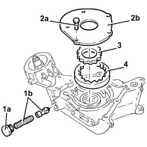
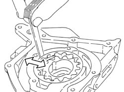
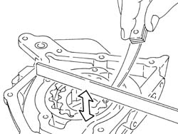
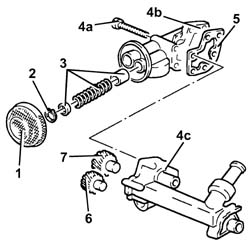
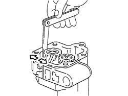
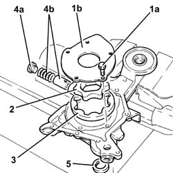
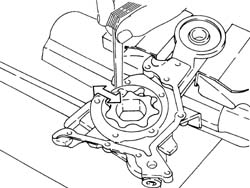
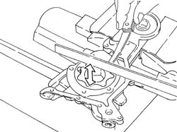
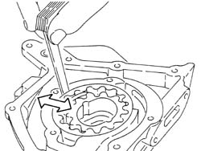
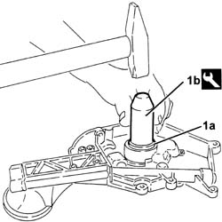

1084B18 ENGINE OIL PUMP, REMOVED - CHECK AT BENCH
- Path
- Procedures > 10 ENGINE UNIT > 1084 ENGINE LUBRICATION SYSTEM > 1084B ENGINE OIL LUBRICATION CIRCUIT > 1084B18 ENGINE OIL PUMP, REMOVED - CHECK AT BENCH
- Kind
- repair procedure (removal / refitting; the operation number is the code)
- Applies to
- all engines; all production periods
- Interactive page
- https://sloeber94.github.io/elrnDB-aGt/en/#/125001156
Applies to: engines: 2.0 JTS; all production periods
 Removing
Removing
 Refitting
Refitting1. Undo the cap (1a) and remove the engine oil pressure relief valve (1b).
2. Undo the bolts (2a) and remove the engine oil pump cover (2b).
3. Remove the drive gear.
4. Remove the driven gear.

Applies to: engines: 2.0 JTS; all production periods
Refitting
RemovingCheck that the radial clearance between the driven gear and the pump casing is within the recommended limits; if this is not the case, replace the oil pump assembly.
Measurement | Value | ||
|---|---|---|---|
- | Radial clearance between driven gear and engine oil pump casing (mm) | 0.080 ÷ 0.186 |

Applies to: engines: 2.0 JTS; all production periods
Check that the clearance between the pump cover support plane and the top of the gears is within the reocmmended values; if this is not the case, replace the oil pump assembly.
Measurement | Value | ||
|---|---|---|---|
- | Endfloat between top of gears and engine oil pump casing support plane (mm) | 0.025 ÷ 0.070 |

Applies to: engines: 2.0 JTS; all production periods
Check that the height of the engine oil pressure relief valve spring is within the recommended values; if not, replace the spring.
Measurement | Value | ||
|---|---|---|---|
- | Height of engine oil pressure relief valve spring (mm) | 36.0 | |
Test load (daN) | 6.4 ÷ 7.2 | ||
Place the driven gear in position.
Place the drive gear in position.
Place the engine oil pump cover back in its housing and secure it using the bolts centering it.
Place the engine oil pressure relief valve in position and tighten the cap.
Applies to: engines: 3.2 V6; all production periods
Removing
Refitting1. Remove the intake gauze.
2. Remove the circlip.
3. Remove the engine oil pressure relief valve.
4. Undo the bolts (4a) and separate the pump cover (4b) from the pump casing (4c).
5. Remove the seal.
6. Remove the drive gear.
7. Remove the driven gear.

Applies to: engines: 3.2 V6; all production periods
Refitting
RemovingCheck that the gears show no signs of wear or seizing; if this is not the case, replace the oil pump assembly.
Check that the radial clearance between the driven gear and the pump casing is within the recommended limits; if this is not the case, replace the oil pump assembly.
Measurement | Value | ||
|---|---|---|---|
- | Radial clearance between driven gear and engine oil pump casing (mm) | 0.025 ÷ 0.075 |

Applies to: engines: 3.2 V6; all production periods
Check that the height of the engine oil pressure relief valve spring is within the recommended values; if not, replace the spring.
Measurement | Value | ||
|---|---|---|---|
- | Height of engine oil pressure relief valve spring (mm) | 33.3 | |
test load (daN) | 15.9 - 16.9 | ||
Place the driven gear in position.
Place the drive gear in position.
Place the gasket back in its housing.
Place the pump cover in position and secure it tightening the bolts to the recommended torque.
Fastening | Component | Ø | Value (daNm) | |
|---|---|---|---|---|
- | - | - | - | - |
Place the engine oil pressure relief valve in position.
Place the circlip in position.
Place the intake gauze back in its housing.
Applies to: engines: 1.9 JTD 16V; all production periods
Removing
Refitting1. Undo bolts (1a) and remove the oil pump cover (1b).
2. Remove the drive gear.
3. Remove the driven gear.
4. Undo the cap (4a) and remove the oil pressure relief valve (4b).
5. Remove the crankshaft front oil seal.

Applies to: engines: 1.9 JTD 16V; all production periods
Refitting
RemovingCheck that the radial clearance between the driven gear and the pump casing is within the recommended limits; if this is not the case, replace the oil pump assembly.
Measurement | Value | ||
|---|---|---|---|
- | Radial clearance between driven gear and pump casing (mm) | 0.080 - 0.186 |

Applies to: engines: 1.9 JTD 16V; all production periods
Check that the axial clearance between the pump cover support plane and the top of the gears is within the recommended values; if this is not the case, replace the oil pump assembly.
Measurement | Value | ||
|---|---|---|---|
- | Endfloat between the pump casing support plane and the top of the gears (mm) | 0.025 - 0.070 |

Applies to: engines: 1.9 JTD 16V; all production periods
Check that the height of the oil pressure relief valve spring is within the recommended values; if not, replace the spring.
Measurement | Value | ||
|---|---|---|---|
- | Height of engine oil pressure relief valve spring (mm) | 35 | |
under test load (daN) | 11.73 - 12.51 | ||
Place the oil pressure relief valve in position and tighten the cap.
Place the driven gear in position.
Place the drive gear in position.
Fit the oil pump cover in its housing and tighten the bolts.
Applies to: engines: 1.8 T.SPARK; all production periods
Removing
Refitting1. Undo the cap (1a) and remove the engine oil pressure relief valve (1b).
2. Undo the bolts (2a) and remove the oil pump cover (2b).
3. Remove the drive gear.
4. Remove the driven gear.
Remove the crankshaft front oil seal.

Applies to: engines: 1.8 T.SPARK; all production periods
Refitting
RemovingCheck that the radial clearance between the driven gear and the pump casing is within the recommended limits; if this is not the case, replace the oil pump assembly.
Measurement | Value | ||
|---|---|---|---|
- | Radial clearance between driven gear and engine oil pump casing (mm) | 0.080 ÷ 0.186 |

Applies to: engines: 1.8 T.SPARK; all production periods
Check that the clearance between the pump cover support plane and the top of the gears is within the reocmmended values; if this is not the case, replace the oil pump assembly.
Measurement | Value | ||
|---|---|---|---|
- | Endfloat between top of gears and engine oil pump casing support plane (mm) | 0.025 ÷ 0.070 |

Applies to: engines: 1.8 T.SPARK; all production periods
Check that the height of the engine oil pressure relief valve spring is within the recommended values; if not, replace the spring.
Measurement | Value | ||
|---|---|---|---|
- | Height of engine oil pressure relief valve spring (mm) | 36.0 | |
Test load (daN) | 6.4 ÷ 7.2 | ||
1. Fit a new crankshaft front oil seal (1a) using the tool (1b).
Description | Code | |
|---|---|---|
1b | Fitting tool | 1.821.247.000 |

Applies to: engines: 1.8 T.SPARK; all production periods
Fit the driven gear.
Fit the drive gear.
Fit the oil pump cover and secure it by tightening the bolts.
Fit the oil pressure relief valve and tighten the cap.